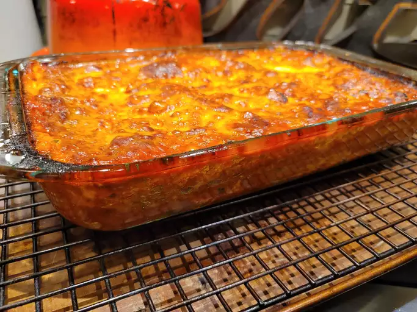
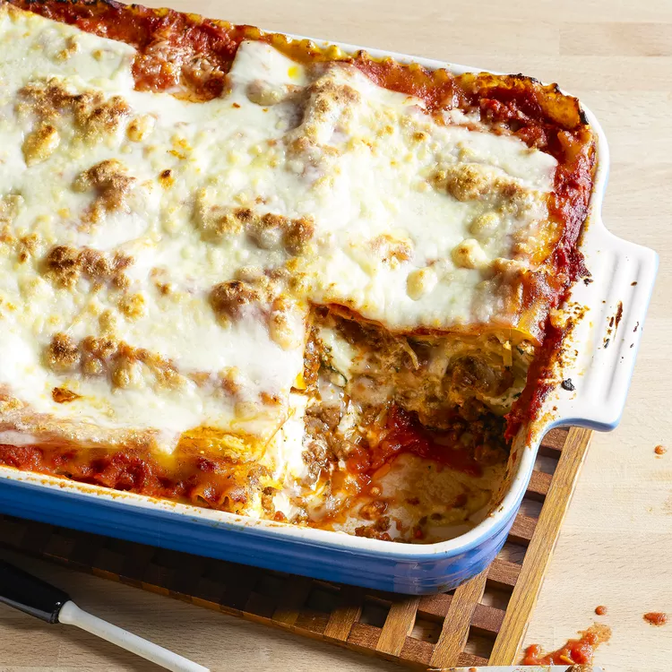

Lasagna

To home Page
Description
This lasagna recipe takes a little work, but it is so satisfying and
filling that it's worth it!
Ingredients
Steps
- Meat
- Onion and Garlic
- Tomato Products(Sauce, Crashed and Paste)
- Sugar
-
Spices and Seasonings(Black Pepper, Parsley, Dried Basil Leaves, Salt,
Italian Seasoning, Fennel Seeds)
- Lasagna Noodles
- Cheeses
- Egg
Steps
-
Make the meat sauce. Cook meat with tomato sauce and seasoning and sugar
in measured quantities. Cook for 1 hour and 30 minutes stirring
often
-
Boil noodles in salted water for 8-10 minutes. Drain and rinse the
noodles in cold water. Add ricotta cheese, egg, remaining tablespoons of
parsley and add some salt to taste
- Preheat oven to 375 degrees F(190 degrees C
-
To assemble, lay a foundation of meat sauce at the bottom of the bowl
and arrange 6 noodles length-wise over the meat sauce. Spread ricotta
cheese mixture. Top with mozzarella cheese slices and sprinkle with 1/4
cups meat sauce with 1/4 cup Parmesan cheese. Repeat layers, and top
with remaining mozzarella and Parmesan cheese. Cover with foil: to
prevent sticking, either spray foil with cooking spray or make sure the
foil does not touch the cheese.
-
Bake in the preheated oven for 25 minutes. Remove the foil and bake for
an additional 25 minutes. Rest lasagna for 15 minutes before serving.

To home Page